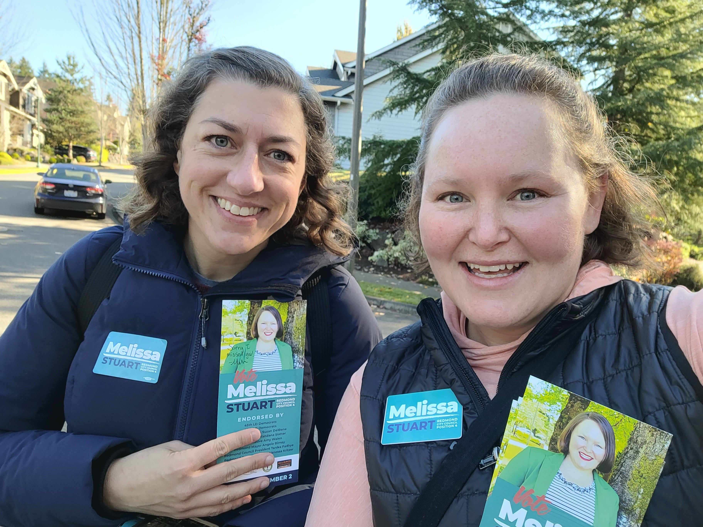

HOUSING SOLUTIONS
Solving our housing crisis takes regional collaboration and steadfast leadership. Melissa is a
leading voice for housing action in our city and region. She represents our community on the Puget Sound
Regional Council's Growth Management Planning Board and King County's Growth Management Planning
Council.
Accomplishments
CLIMATE RESILIENCE & READINESS
Redmond is home to dedicated climate champions in our neighborhoods, businesses, and government.
Melissa represents Redmond's sustainability priorities at the Association of Washington Cities
Legislative Priorities Committee and National League of Cities Energy, Environment, and Natural
Resources Committee.
Accomplishments
COMMUNITY HEALTH & PUBLIC SAFETY
Melissa is proud to work alongside residents, community-based organizations, and her Council
colleagues to tackle some of the most pressing issues of the moment. Last year, she served on a Council
subcommittee to solve for a $6M funding gap in public safety and community health services.
Additionally, she serves as a board member at Together Center, a non-profit human services hub in
Downtown Redmond.
Accomplishments